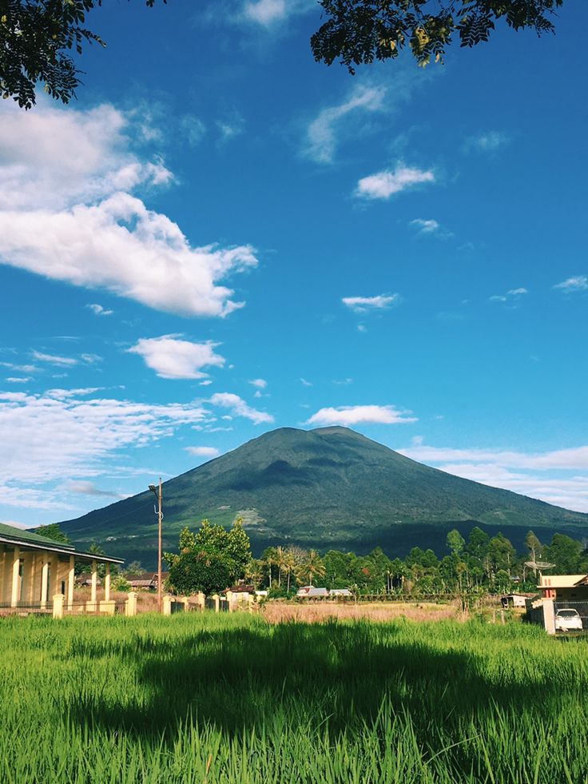
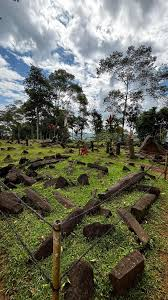

Mendidik dengan Logika,
Menginspirasi dengan Hati.
Selamat datang di ruang refleksi digital saya. Sebagai calon pendidik profesional bidang Informatika dari Universitas Negeri Yogyakarta, portofolio ini menyajikan perjalanan teoretis, implementasi praktis di SMAN 1 Depok, serta dinamika komprehensif dalam menyelaraskan teknologi dan pedagogi humanis demi mencerdaskan generasi masa depan.
Pendidikan
PPG Prajabatan UNY
Lokasi PPL
SMAN 1 Depok, Sleman
Keahlian Utama
Informatika
Profil Pendidik & Daerah Asal
Refleksi awal dimulai dari memahami jati diri, akar budaya asal, serta panggilan pengabdian moral untuk menapaki jalan profesi sebagai guru pembelajar.
Asal Usul & Akar Budaya
Saya lahir di Desa Gunung Agung Pauh, Kota Pagar Alam, Provinsi Sumatera Selatan pada tanggal 2 Agustus 1996. Saya menempuh pendidikan dasar hingga menengah atas di Kota Pagar Alam, sebuah daerah yang berada di kaki Gunung Dempo dengan hamparan kebun kopi dan udara pegunungan yang sejuk. Lingkungan tempat saya tumbuh mengajarkan nilai kerja keras, disiplin, dan ketekunan melalui kehidupan masyarakat yang sebagian besar bekerja di sektor pertanian. Dari mereka, saya belajar bahwa setiap keberhasilan membutuhkan proses, kesabaran, dan usaha yang konsisten. Selain keindahan alamnya, Kota Pagar Alam juga memiliki budaya gotong royong, rasa hormat kepada orang tua, dan kepedulian terhadap sesama yang masih terjaga hingga kini. Nilai-nilai tersebut membentuk karakter saya dan memengaruhi cara saya menjalankan profesi sebagai guru. Dalam proses pembelajaran, saya berusaha menanamkan sikap disiplin, tanggung jawab, kerja sama, dan semangat belajar kepada peserta didik. Bagi saya, tanah kelahiran bukan hanya tempat asal, tetapi juga fondasi yang membentuk jati diri dan filosofi saya sebagai pendidik.
Inspirasi & Visi Menjadi Guru
Inspirasi saya menjadi guru Informatika tumbuh dari kesadaran akan kesenjangan akses teknologi digital antara kota besar dan daerah. Saya ingin menjadi jembatan computational thinking bagi generasi muda. Menjadi guru profesional bagi saya bukan sekadar mentransfer teori jaringan atau pemrograman, melainkan membentuk growth mindset siswa agar adaptif terhadap perubahan teknologi.
Melalui perkuliahan PPG di Universitas Negeri Yogyakarta dan kancah PPL di SMAN 1 Depok, saya mendedikasikan diri untuk meramu rancangan pembelajaran bermutu tinggi dengan pendekatan yang adil, responsif, dan berbasis kebutuhan riil siswa di kelas.
3 Keunikan Kota Pagaralam

Negeri di Atas Awan & Gunung Dempo
Kota Pagar Alam dianugerahi bentang alam pegunungan yang indah dengan udara yang sejuk dan pemandangan yang memanjakan mata. Dari berbagai sudut kota, terutama pada pagi hari, hamparan awan dan kabut putih sering terlihat menyelimuti lembah serta perbukitan di sekitarnya, menciptakan pemandangan yang seolah-olah berada di atas awan tanpa harus mendaki hingga ke puncak gunung. Keindahan alam tersebut semakin sempurna dengan kehadiran Gunung Dempo yang berdiri megah sebagai ikon utama kota, dikelilingi hamparan kebun teh dan perkebunan kopi yang menjadi sumber penghidupan masyarakat setempat. Bagi masyarakat Pagar Alam, Gunung Dempo bukan hanya memperindah lanskap daerah, tetapi juga menjadi simbol keteguhan, kerja keras, dan kesabaran. Tumbuh dan besar dengan latar pemandangan Gunung Dempo setiap hari memberikan saya pelajaran bahwa setiap keberhasilan membutuhkan proses, ketekunan, dan semangat untuk terus berkembang, sebagaimana alam yang senantiasa menjaga keindahan dan keseimbangannya sepanjang waktu.

Situs Megalitikumnya salah satu terbanyak di indonesia
Pagar Alam merupakan salah satu daerah di Indonesia yang memiliki kekayaan situs megalitikum terbanyak dan paling beragam. Di berbagai wilayahnya dapat ditemukan ratusan peninggalan purbakala berupa arca batu, menhir, dolmen, batu datar, hingga kubur batu yang tersebar di kawasan perbukitan dan lembah. Keberadaan situs-situs tersebut menjadi bukti bahwa wilayah Pagar Alam telah menjadi pusat kehidupan dan peradaban manusia sejak ribuan tahun yang lalu. Keunikan arca-arca megalitik di Pagar Alam terletak pada bentuknya yang ekspresif dan berbeda dengan peninggalan megalitik di daerah lain, sehingga memiliki nilai sejarah dan budaya yang sangat tinggi.
Kota Seribu Air Terjun (Cuhup)
Pagar Alam dikenal sebagai daerah yang kaya akan keindahan alam, salah satunya melalui keberadaan puluhan air terjun atau yang oleh masyarakat setempat disebut cuhup. Terletak di kawasan pegunungan yang subur di sekitar Gunung Dempo, aliran air yang jernih dan segar mengalir melalui tebing-tebing alami, menciptakan panorama yang memukau dan menenangkan. Beberapa air terjun yang terkenal, seperti Cuhup Embun dan Cuhup Mangkok, menjadi daya tarik wisata yang banyak dikunjungi karena keindahan alamnya yang masih alami. Keberadaan berbagai cuhup ini tidak hanya memperkaya pesona wisata Pagar Alam, tetapi juga menjadi bagian dari identitas daerah yang mencerminkan kekayaan sumber daya alam, kesejukan lingkungan pegunungan, serta keharmonisan kehidupan masyarakat dengan alam yang terus dijaga dan dilestarikan hingga saat ini.
"Teknologi hanyalah alat penunjang efektivitas. Namun dalam memantik gairah rasa ingin tahu, kolaborasi aktif, serta ketajaman nalar kritis siswa, sosok gurulah kunci utamanya."
- Dias Maulana
Analisis Artefak Produk Perangkat Pembelajaran
Daftar produk perangkat ajar berstandar tinggi yang diterapkan di SMAN 1 Depok selama 3 siklus. Setiap artefak diuraikan secara mendalam berdasarkan landasan pedagogis ilmiah, dilengkapi pratinjau dokumen dan media dari Google Drive.
Modul Ajar Siklus 1
Diterapkan di kelas X SMA Negeri 1 Depok Sleman
Pratinjau Modul
Pratinjau Modul Siklus 1
Masukkan ID Google Drive pada konfigurasi
Pratinjau Media
Pratinjau Media Siklus 1
Masukkan ID Google Drive pada konfigurasi
Analisis Refleksi Mendalam:
Kendala Penyusunan:
Dalam penyusunan perangkat pembelajaran materi VLOOKUP, saya mengalami beberapa kendala, terutama dalam merancang permasalahan yang kontekstual dan sesuai dengan karakteristik model Problem Based Learning (PBL). Saya perlu menyesuaikan kasus yang digunakan dengan situasi dunia kerja agar peserta didik dapat memahami manfaat penggunaan VLOOKUP dalam pengolahan data. Selain itu, saya juga menghadapi tantangan dalam menyusun LKPD, media pembelajaran, dan latihan yang mampu mengakomodasi perbedaan kemampuan peserta didik. Beberapa peserta didik diperkirakan masih mengalami kesulitan memahami sintaks dan argumen rumus VLOOKUP, sehingga diperlukan penyusunan latihan yang bertahap mulai dari tingkat sederhana hingga lebih kompleks.
Teori Pedagogis Teradopsi:
Dalam penyusunan perangkat pembelajaran, saya mengadopsi model Problem Based Learning (PBL) yang menempatkan peserta didik sebagai pusat pembelajaran melalui penyelesaian masalah nyata. Model ini didukung oleh teori konstruktivisme yang menekankan bahwa pengetahuan dibangun melalui pengalaman dan aktivitas belajar peserta didik. Selain itu, saya juga menerapkan pendekatan Contextual Teaching and Learning (CTL) dengan mengaitkan materi VLOOKUP pada kebutuhan dunia kerja, khususnya dalam pengolahan data administrasi dan penggajian karyawan. Melalui pendekatan tersebut, peserta didik diharapkan dapat memahami konsep sekaligus melihat manfaat nyata dari materi yang dipelajari.
Faktor Keberhasilan:
Keberhasilan penerapan perangkat pembelajaran didukung oleh penggunaan permasalahan yang relevan dengan dunia kerja sehingga mampu meningkatkan motivasi belajar peserta didik. Selain itu, penerapan model Problem Based Learning mendorong peserta didik untuk berpikir kritis dan aktif mencari solusi terhadap masalah yang diberikan. Penggunaan Microsoft Excel sebagai media praktik langsung juga membantu peserta didik memahami konsep VLOOKUP secara lebih konkret. Didukung dengan media presentasi yang sistematis, suasana kelas yang kondusif, serta partisipasi aktif peserta didik selama proses pembelajaran, tujuan pembelajaran dapat tercapai dengan baik dan peserta didik menunjukkan pemahaman dasar terhadap penggunaan fungsi VLOOKUP.
Modifikasi untuk Kelas Berbeda:
Apabila perangkat pembelajaran ini diterapkan pada kelas yang berbeda, beberapa komponen dapat disesuaikan dengan karakteristik peserta didik dan kondisi kelas. Permasalahan yang digunakan dalam pembelajaran dapat dimodifikasi tingkat kesulitannya sesuai kemampuan peserta didik, sedangkan media pembelajaran dapat dikembangkan dengan menambahkan video, simulasi interaktif, atau kuis digital untuk meningkatkan keterlibatan belajar. Selain itu, strategi pengelompokan peserta didik dapat disesuaikan agar mendukung kolaborasi yang lebih efektif, sementara LKPD dan latihan praktik dapat diperbanyak serta disusun secara bertahap untuk membantu peserta didik memahami materi secara lebih mendalam. Perubahan tersebut dilakukan agar pembelajaran tetap relevan, fleksibel, dan mampu memenuhi kebutuhan belajar peserta didik yang beragam.
Modul Ajar Siklus 2
Diterapkan di kelas X SMA Negeri 1 Depok Sleman
Pratinjau Modul
Pratinjau Modul Siklus 2
Masukkan ID Google Drive pada konfigurasi
Pratinjau Media
Pratinjau Media Siklus 2
Masukkan ID Google Drive pada konfigurasi
Analisis Refleksi Mendalam:
Kendala Penyusunan:
Dalam proses penyusunan perangkat pembelajaran materi Pivot Table, saya mengalami kendala dalam merancang permasalahan yang sesuai dengan karakteristik model Problem Based Learning (PBL) dan relevan dengan kebutuhan dunia kerja. Saya perlu menyusun aktivitas pembelajaran, LKPD, dan media presentasi yang mampu membantu peserta didik memahami konsep analisis data secara bertahap melalui praktik langsung. Selain itu, saya juga harus mempertimbangkan perbedaan kemampuan peserta didik dalam menggunakan Microsoft Excel sehingga diperlukan penyusunan langkah-langkah praktik yang sistematis agar seluruh peserta didik dapat mengikuti pembelajaran dengan baik.
Teori Pedagogis Teradopsi:
Dalam penyusunan perangkat pembelajaran, saya mengadopsi model Problem Based Learning (PBL) yang menempatkan peserta didik sebagai pusat pembelajaran melalui kegiatan pemecahan masalah yang berkaitan dengan pengolahan dan analisis data. Model ini didukung oleh teori konstruktivisme yang menekankan bahwa pengetahuan dibangun melalui pengalaman belajar dan praktik langsung. Selain itu, saya juga menerapkan pendekatan Contextual Teaching and Learning (CTL) dengan mengaitkan materi Pivot Table dengan situasi dunia kerja, khususnya dalam penyajian dan analisis data dalam jumlah besar, sehingga peserta didik dapat memahami manfaat dan penerapan materi dalam kehidupan nyata.
Faktor Keberhasilan:
Keberhasilan penerapan perangkat pembelajaran didukung oleh penggunaan model Problem Based Learning yang mampu mendorong peserta didik untuk aktif mencari solusi terhadap permasalahan yang diberikan. Penggunaan media pembelajaran berupa Microsoft Excel dan slide presentasi membantu peserta didik memahami konsep Pivot Table sebelum melakukan praktik secara langsung. Selain itu, keterkaitan materi dengan dunia kerja, suasana kelas yang kondusif, serta tingginya partisipasi peserta didik selama kegiatan praktik menjadi faktor penting yang mendukung tercapainya tujuan pembelajaran. Hal ini terlihat dari sebagian besar peserta didik yang mampu mengikuti langkah-langkah praktik secara mandiri dan menyelesaikan tugas yang diberikan dengan baik.
Modifikasi untuk Kelas Berbeda:
Apabila perangkat pembelajaran ini diterapkan pada kelas yang berbeda, saya akan menyesuaikan tingkat kompleksitas masalah, contoh kasus, dan aktivitas pembelajaran sesuai dengan kemampuan peserta didik. Pada kelas dengan kemampuan yang lebih beragam, saya akan menambahkan panduan praktik yang lebih rinci, memperbanyak contoh kasus yang dekat dengan dunia kerja, serta menyediakan aktivitas kolaboratif agar peserta didik dapat saling membantu dalam menyelesaikan tugas. Selain itu, media pembelajaran dapat dikembangkan menjadi lebih interaktif melalui penggunaan video tutorial, kuis digital, atau simulasi sehingga peserta didik yang kurang fokus saat penjelasan tetap dapat mengikuti proses pembelajaran secara mandiri dan mencapai tujuan pembelajaran secara optimal.
Modul Ajar Siklus 3
Diterapkan di kelas X SMA Negeri 1 Depok Sleman
Pratinjau Modul
Pratinjau Modul Siklus 3
Masukkan ID Google Drive pada konfigurasi
Pratinjau Media
Pratinjau Media Siklus 3
Masukkan ID Google Drive pada konfigurasi
Pratinjau Hasil LKPD siswa
Pratinjau LKPD Siklus 3
Masukkan ID Google Drive pada konfigurasi
Analisis Refleksi Mendalam:
Kendala Penyusunan:
Dalam penyusunan perangkat pembelajaran materi Scratch, saya mengalami beberapa kendala, terutama dalam merancang proyek yang sesuai dengan kemampuan peserta didik yang sebagian besar belum pernah menggunakan Scratch sebelumnya. Saya perlu menyusun modul ajar, LKPD, media presentasi, serta langkah-langkah proyek yang sistematis agar peserta didik dapat memahami konsep algoritma dan pemrograman secara bertahap. Selain itu, saya juga harus menyesuaikan alokasi waktu pembelajaran dengan aktivitas Project Based Learning (PjBL) yang cukup banyak, mulai dari pengenalan antarmuka Scratch, perencanaan proyek, pembuatan animasi, debugging, hingga presentasi hasil proyek. Tantangan lainnya adalah memastikan setiap kelompok memiliki kesempatan untuk berkolaborasi dan menyelesaikan proyek sesuai tujuan pembelajaran yang telah ditetapkan.
Teori Pedagogis Teradopsi:
Dalam penyusunan perangkat pembelajaran ini, saya mengadopsi model Project Based Learning (PjBL) yang berpusat pada peserta didik melalui kegiatan proyek pembuatan animasi sederhana menggunakan Scratch. Model ini didukung oleh teori konstruktivisme yang menekankan bahwa pengetahuan dibangun melalui pengalaman langsung, eksplorasi, dan pemecahan masalah. Selain itu, saya juga menerapkan pendekatan Deep Learning dengan prinsip mindful, meaningful, dan joyful agar peserta didik tidak hanya memahami konsep pemrograman, tetapi juga mampu menghubungkannya dengan kehidupan sehari-hari dan perkembangan teknologi yang mereka gunakan. Melalui kegiatan proyek, diskusi kelompok, praktik, debugging, dan presentasi, peserta didik diberi kesempatan untuk mengembangkan kreativitas, berpikir kritis, berkolaborasi, serta menghasilkan karya yang bermakna.
Faktor Keberhasilan:
Keberhasilan penerapan perangkat pembelajaran didukung oleh penggunaan Scratch sebagai media pembelajaran yang menarik dan mudah dipahami oleh peserta didik karena bersifat visual dan interaktif. Selain itu, penerapan model Project Based Learning membuat peserta didik terlibat aktif dalam proses pembelajaran melalui kegiatan merancang, membuat, dan menguji proyek animasi sederhana secara berkelompok. Penggunaan media yang beragam seperti PPT, website Scratch, LKPD, dan Wayground juga membantu meningkatkan keterlibatan peserta didik selama pembelajaran. Keberhasilan tersebut terlihat dari tingginya antusiasme peserta didik saat membuat animasi, meningkatnya kreativitas dan kolaborasi dalam kelompok, serta tingkat keaktifan peserta didik yang mencapai lebih dari 80% selama proses pembelajaran berlangsung.
Modifikasi untuk Kelas Berbeda:
Apabila perangkat pembelajaran ini diterapkan pada kelas yang berbeda, saya akan melakukan beberapa penyesuaian sesuai karakteristik peserta didik dan kondisi kelas. Pada kelas dengan kemampuan awal yang lebih rendah, saya akan menambahkan contoh proyek yang lebih sederhana, memperjelas petunjuk pada LKPD, dan menyediakan pendampingan yang lebih intensif selama praktik. Sebaliknya, pada kelas yang memiliki kemampuan lebih tinggi, saya dapat memberikan proyek yang lebih kompleks seperti pembuatan game sederhana atau animasi interaktif dengan fitur tambahan. Selain itu, saya juga akan melakukan penyesuaian alokasi waktu pada setiap tahapan proyek agar seluruh kegiatan, termasuk presentasi hasil proyek, dapat terlaksana secara optimal. Saya juga berencana menambahkan variasi aktivitas yang lebih mendorong kreativitas, komunikasi, dan kolaborasi peserta didik sehingga pembelajaran menjadi lebih efektif dan sesuai dengan kebutuhan setiap kelas.
Galeri Foto & Video Dokumentasi Mengajar Terbimbing
Dokumentasi di kelas X SMAN 1 Depok, Sleman, Yogyakarta — Siklus 1, 2, & 3
Galeri Foto Dokumentasi
Foto Dokumentasi 1
ID Google Drive belum diatur
Foto Dokumentasi 2
ID Google Drive belum diatur
Foto Dokumentasi 3
ID Google Drive belum diatur
Foto Dokumentasi 4
ID Google Drive belum diatur
Foto Dokumentasi 5
ID Google Drive belum diatur
Foto Dokumentasi 6
ID Google Drive belum diatur
Foto Dokumentasi 7
ID Google Drive belum diatur
Foto Dokumentasi 8
ID Google Drive belum diatur
Foto Dokumentasi 9
ID Google Drive belum diatur
Foto Dokumentasi 10
ID Google Drive belum diatur
Klik foto untuk melihat ukuran penuh. Atur ID Google Drive di bagian konfigurasi GOOGLE_DRIVE_IDS.dokumentasi.foto
Video Dokumentasi Praktik Mengajar
1 Cuplikan Video mengajar
Video Dokumentasi 1
ID Google Drive belum diatur
2 Cuplikan Video mengajar
Video Dokumentasi 2
ID Google Drive belum diatur
Penilaian Guru Pamong & DPL (Lampiran 7 & 8)
Rekapitulasi resmi performa rancangan perangkat pembelajaran (Lampiran 7) dan praktik mengajar nyata (Lampiran 8) yang telah diawasi oleh Guru Pamong serta Dosen Pembimbing Lapangan.
Dokumen Lampiran 7 & 8
Lampiran 7: Evaluasi Rancangan Perangkat
Lampiran 8: Evaluasi Praktik Mengajar Nyata
Dokumen Lampiran 7 & 8 (3 Berkas)
📄 Lampiran 7 (Evaluasi Perangkat)
Pratinjau Lampiran 1
📄 Lampiran 8 (Evaluasi Praktik)
Pratinjau Lampiran 2
📄 Lampiran 7 & 8 (Gabungan)
Pratinjau Lampiran 3
Masukkan ID Google Drive di konfigurasi GOOGLE_DRIVE_IDS.penilaian
Catatan Guru Pamong:
"Pertahankan kreativitas dan semangat mengajar yang sudah baik. Tingkatkan pengelolaan waktu agar seluruh kegiatan pembelajaran dapat terlaksana secara optimal."
Guru Pamong Informatika
SMAN 1 Depok, Sleman, Yogyakarta
81,8
Nilai Rata-Rata Kumulatif
Representasi total perolehan penilaian perangkat dan performa praktik mengajar secara komprehensif.
Refleksi akhir Praktik Terbimbing
Memetakan misi strategis, kompetensi unggulan, pemetaan kekuatan pribadi, kelemahan diri yang harus diperbaiki, serta rancangan aksi tindak lanjut profesional.
Apa yang telah mahasiswa pelajari sebagai peserta PPG calon guru selama tahapan PPL Terbimbing dari awal hingga akhir?
Sebagai peserta PPG Calon Guru, saya mempelajari banyak hal selama pelaksanaan PPL Terbimbing dari awal hingga akhir. Saya belajar bagaimana merencanakan pembelajaran melalui penyusunan modul ajar, LKPD, media pembelajaran, dan instrumen asesmen yang sesuai dengan karakteristik peserta didik. Saya juga memperoleh pengalaman dalam menerapkan berbagai model pembelajaran seperti Problem Based Learning (PBL) dan Project Based Learning (PjBL), mengelola kelas, memanfaatkan teknologi sebagai media pembelajaran, serta melaksanakan asesmen dan refleksi pembelajaran. Melalui bimbingan Guru Pamong dan Dosen Pembimbing Lapangan, saya memahami pentingnya pembelajaran yang berpusat pada peserta didik, pengelolaan waktu yang efektif, serta pemberian pengalaman belajar yang bermakna dan menyenangkan. PPL Terbimbing juga membantu saya meningkatkan kompetensi pedagogik, profesional, sosial, dan kepribadian sehingga saya menjadi lebih percaya diri dan siap menjalankan tugas sebagai guru profesional di masa depan.
Apakah terdapat pengalaman yang menantang dan bagaimana solusi dari permasalahan tersebut?
Ya, selama pelaksanaan PPL Terbimbing saya mengalami beberapa pengalaman yang menantang, terutama dalam mengelola waktu pembelajaran agar seluruh kegiatan yang telah direncanakan dalam modul ajar dapat terlaksana dengan baik. Pada beberapa pertemuan, peserta didik membutuhkan waktu lebih lama saat praktik sehingga kegiatan presentasi atau refleksi belum dapat dilaksanakan secara optimal. Selain itu, saya juga menghadapi tantangan dalam mengakomodasi perbedaan kemampuan peserta didik, terutama saat mempelajari materi yang membutuhkan keterampilan praktik seperti Microsoft Excel dan Scratch. Untuk mengatasi hal tersebut, saya melakukan perbaikan pada perencanaan pembelajaran, memperjelas petunjuk kegiatan, memberikan contoh yang lebih bertahap, serta meningkatkan pendampingan kepada peserta didik yang mengalami kesulitan. Pengalaman tersebut menjadi pembelajaran berharga bagi saya untuk terus meningkatkan kualitas pembelajaran dan kemampuan mengelola kelas secara lebih efektif.
Apakah umpan balik atau saran konstruktif yang diberikan kepada mahasiswa dalam diskusi refleksi akhir sebagai bentuk perbaikan untuk ke tahap PPL selanjutnya (PPL Mandiri)
Dalam diskusi refleksi akhir, saya memperoleh umpan balik dan saran konstruktif untuk terus meningkatkan kualitas pembelajaran pada tahap PPL Mandiri. Saya disarankan untuk mempertahankan kemampuan dalam menyusun perangkat pembelajaran yang sistematis dan memanfaatkan media pembelajaran yang bervariasi. Selain itu, saya perlu meningkatkan pengelolaan waktu agar seluruh rangkaian kegiatan pembelajaran dapat terlaksana sesuai perencanaan, terutama pada tahap presentasi, refleksi, dan tindak lanjut. Saya juga disarankan untuk terus mengembangkan pembelajaran yang berpusat pada peserta didik, memberikan pendampingan yang lebih optimal kepada peserta didik yang mengalami kesulitan, serta memperkaya aktivitas pembelajaran yang mampu meningkatkan kreativitas, kolaborasi, dan keterampilan berpikir kritis peserta didik. Umpan balik tersebut menjadi bekal bagi saya untuk melaksanakan PPL Mandiri dengan lebih baik dan profesional.
Filosofi Mengajar
Bagi saya, menjadi guru bukan hanya tentang menyampaikan materi pelajaran, tetapi juga tentang berbagi ilmu, pengalaman, dan nilai-nilai kehidupan kepada peserta didik. Saya memilih profesi guru karena saya senang berinteraksi dengan peserta didik dan ingin membantu mereka berkembang sesuai potensi yang dimiliki. Saya meyakini bahwa setiap peserta didik memiliki kemampuan, karakter, dan kecepatan belajar yang berbeda sehingga mereka perlu diberikan kesempatan untuk belajar secara bertahap dalam lingkungan yang aman, nyaman, dan mendukung perkembangan mereka.
Dalam praktik pembelajaran, saya percaya bahwa peserta didik harus menjadi pusat dari proses belajar. Oleh karena itu, saya berusaha menerapkan pembelajaran yang memberikan ruang bagi peserta didik untuk aktif bertanya, berdiskusi, mencoba, dan menemukan pemahamannya sendiri. Pengalaman selama PPL Terbimbing semakin menguatkan keyakinan saya bahwa pembelajaran yang melibatkan peserta didik secara aktif melalui kegiatan praktik, pemecahan masalah, dan proyek mampu meningkatkan motivasi serta pemahaman mereka terhadap materi. Pandangan ini sejalan dengan teori konstruktivisme yang menyatakan bahwa pengetahuan dibangun melalui pengalaman dan keterlibatan aktif peserta didik dalam proses belajar.
Sebagai guru Informatika, saya memandang teknologi bukan hanya sebagai alat bantu pembelajaran, tetapi juga sebagai keterampilan masa depan yang perlu dikuasai oleh peserta didik. Melalui pembelajaran Informatika, saya ingin membantu peserta didik mengembangkan kemampuan berpikir logis, kreatif, kritis, dan kolaboratif yang akan bermanfaat dalam kehidupan maupun dunia kerja di masa mendatang. Oleh karena itu, saya berupaya menghadirkan pembelajaran yang kontekstual dan relevan dengan perkembangan teknologi sehingga peserta didik dapat melihat manfaat nyata dari apa yang mereka pelajari.
Selain kompetensi akademik, saya juga meyakini bahwa pembentukan karakter merupakan bagian penting dari pendidikan. Saya berharap peserta didik tidak hanya mampu memahami materi pelajaran, tetapi juga memiliki sikap disiplin, tanggung jawab, kerja sama, dan rasa hormat kepada orang lain. Karena itu, saya berusaha menjadi guru yang sabar, mampu mendengarkan, memberikan bimbingan, serta menjadi teladan yang baik bagi peserta didik dalam proses pembelajaran maupun kehidupan sehari-hari.
Pengalaman selama PPL Terbimbing juga mengajarkan saya bahwa perencanaan yang baik dan pengelolaan waktu yang efektif sangat menentukan keberhasilan pembelajaran. Refleksi yang saya lakukan selama proses tersebut mendorong saya untuk terus belajar, memperbaiki diri, dan mengembangkan kompetensi profesional sebagai pendidik. Saya percaya bahwa guru yang baik adalah guru yang sabar, mau terus belajar, dan senantiasa berupaya memberikan pengalaman belajar yang bermakna bagi setiap peserta didiknya.
Praktik Pengalaman Lapangan Mandiri
Dokumentasi perangkat pembelajaran Semester 2 disusun berdasarkan siklus, sedangkan kegiatan non-mengajar memiliki bagian tersendiri di luar konten siklus.
PORTOFOLIO PRAKTIK
Semester 2 · Siklus Pembelajaran
Artefak yang ditampilkan
Siklus 1
Pilih kategori untuk melihat dokumen dan dokumentasi.
DOKUMENTASI TERPISAH
Kegiatan Non Mengajar
Bagian ini berdiri sendiri dan tidak terikat pada Siklus 1, 2, 3 (UTS), maupun Siklus 4 (UAS).
Dokumentasi Kegiatan Non Mengajar
Area ini disediakan khusus untuk menampilkan dokumentasi kegiatan non-mengajar, seperti foto, video, atau dokumen pendukung. Tautan dokumentasi belum disertakan, sehingga pratinjau dan tombol unduh akan ditampilkan setelah tautannya ditambahkan.
Menunggu tautan dokumentasiMari Berdiskusi & Berkolaborasi Memajukan Pendidikan Indonesia!
Saya selalu terbuka untuk berdiskusi terkait metodologi pengajaran Informatika, inovasi kurikulum Merdeka, serta kolaborasi riset tindakan kelas. Silakan kirim pesan melalui kontak di bawah ini.
E-mail Profesional
diasmaulana2025@student.uny.ac.id
Tempat PPL Aktif
SMA Negeri 1 Depok, Sleman, D.I. Yogyakarta
Kota Merantau / Asal
Yogyakarta / Kota Pagaralam, Sumatera Selatan